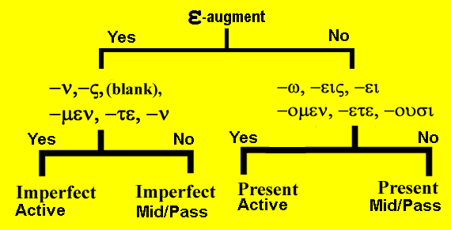

| Greek | Meaning | Notes |
|---|---|---|
| γυνή | woman, wife | cognate: gynacology |
| δεξιός | right | opposite to left, i.e., right-hand side |
| ἐκεῖ | there | |
| διό | wherefore | i.e., for what reason |
| σοφία | wisdom | |
| βιβλίον | book | cognate: Bible |
| δαιμόνιον | demon | |
| ἔργον | work | cognate: energy, erg |
| θάλασσα | sea | |
| πλοῖον | boat | |
| καθαρίζω | I cleanse, purify | cognate: catheter, cathartic, catharsis |
| οὐδέ | and not, nor, not even | |
| οὐδέ ... οὐδέ | neither ... nor | |
| οὔπω | not yet | careful, this is not a verb even though it ends in ω. |
The imperfect middle and passive voice
- The imperfect middle voice is identical in form to the imperfect passive voice.
- The difference will be in function or meaning.
| Singular | ||
| Form | Meaning | |
|---|---|---|
| 1st | ἐλυόμην | I was loosing myself |
| 2nd | ἐλύου | you were loosing yourself |
| 3rd | ἐλύετο | he was loosing himself |
| Plural | ||
| Form | Meaning | |
| 1st | ἐλυόμεθα | we were loosing ourselves |
| 2nd | ἐλύεσθε | you were loosing yourselves |
| 3rd | ἐλύοντο | they were loosing themselves |
| Singular | ||
| Form | Meaning | |
|---|---|---|
| 1st | ἐλυόμην | I was being loosed |
| 2nd | ἐλύου | you were being loosed |
| 3rd | ἐλύετο | he was being loosed |
| Plural | ||
| Form | Meaning | |
| 1st | ἐλυόμεθα | we were being loosed |
| 2nd | ἐλύεσθε | you were being loosed |
| 3rd | ἐλύοντο | they were being loosed |
- The endings of the these imperfect middle/passive verbs are:
- -μην, -σο, -το, -μεθα, -σθε, -ντο
- Once again, the variable vowel ο/ε is added to the stem.
- ο before μ or ν
- ε before the rest
- One exception:
- In the second person singular, the ending -εσο becomes -ου.
- Thus ἐλύεσο becomes ἐλύου.
- If a verb is deponent in the present, it is also deponent in the imperfect.
- Thus ἔρχομαι becomes ἠρχόμην.
- A Greek exception
- Normally you expect that a plural subject always has a verb with plural ending.
- οἱ ἄνθρωποι ἔχουσι τὸν βιβλίον.
- the men have the book.
- ἄνθρωποι is plural and so is ἔχουσι
- However, in Greek, when the subject is a neuter plural noun, the verb is almost always in the singular rather than the plural.
- τὰ τέκνα ἔξει τὸν βιβλίον.
- The children have the book.
- not τὰ τέκνα ἔχουσι τὸν βιβλίον
- Normally you expect that a plural subject always has a verb with plural ending.
The translation of the conjunction καί
- Most of the time καί simply means and. It joins two ideas.
- Sometimes καί is found immediately in front of a word and means also or even.
- γινώσκουσι καὶ ἁμαρτωλοὶ τὸν νόμον. Even sinners know the law.
- τοῦτο δὲ καὶ ἐγὼ γινώσκω. But this I also know.
- Sometimes two instances of καί appear.
- The first instance should be translated both, the second as and.
- καὶ οἱ μαθηταὶ καὶ οἱ προφῆται γινώσκουσι τοῦτο.
- Both the disciples and the prophets know this.
The translation of οὐδέ
- Often οὐδέ is a simple negative meaning and not or nor.
- οὐ γινώσκω τοῦτο, οὐδὲ γινώσκεις αὐτό.
- I do not know this nor do you know it.
- Sometimes οὐδέ is emphatic and should be translated not even.
- οὐδὲ οἱ προφῆται βλέπουσιν τὸν θεόν.
- Not even the prophets see God.
- Like καί ... καί, οὐδέ ... οὐδέ is translated as neither ... nor.
- οὐδὲ οἱ μαθηταὶ γινώσκουσι τοῦτο οὐδὲ οἱ προφῆται.
- Neither the disciples nor the prophets know this.
VERB IDENTIFICATION
- Ask yourself the following questions:
- Does it have an augment?
- Yes, then it is a past tense
- No, then it is present tense
- If it is a past tense, does it have the endings:
-ν, -ς, (blank), -μεν, -τε, -ν (or -σαν)?- Yes, it is imperfect active
- No, it is imperfect middle/passive
- If it is a present tense, does it have the endings:
-ω, -εις, -ει, -ομεν, -ετε, -ουσι ?- If yes, it is present indicative active.
- If no, then it is present indicative middle/passive.
- Does it have an augment?

Translate the following:
- οὗτοι οἱ λόγοι ἐν τῷ βιβλίῳ ἐγράφοντο.
- καὶ οἱ λόγοι καὶ αἱ γραφαὶ τῶν προφητῶν ἠκούοντο ὑπὸ τῶν ἁμαρτωλῶν.
- ἐν ἐκείναις ταῖς ἡμέραις οὐδὲ ἐδιδασκόμεθα ὑπ̓αὐτοῦ οὐδὲ ἐδιδάσκομεν τοὺς ἄλλους.
- τὸτε ὄχλος ἐξεπορεύετο πρὸς αὐτόν, νῦν δὲ οὐκέτι ἐκπορεύεται.
- καὶ πρὸς τοὺς πονηροὺς ἀδελφοὺς ἐφέρετο τὰ δῶρα.
- οὔπω βλέπουσι τὸν κύριον ἐν τῇ δόξῃ αὐτοῦ, ἀλλὰ ἐδιδάσκοντο ὑπ̓ αὐτοῦ καὶ ἐν ταῖς ἡμέραις ταῖς κακαῖς.
- οἱ μαθηταὶ κατήρχοντο πρὸς τὴν θάλασσαν καὶ εἰσηρχόμεθα εἰς τὸ πλοῖον σὺν τῷ κυρίῳ.
- ὁ μεσσίας ἐξέβαλλε τὰ δαιμόνια ἐκ τῶν ἁμαρτωλῶν καὶ ἐκαθάριζεν αὐτοὺς ἀπὸ τῶν ἁμαρτιῶν αὐτῶν.
- ἐσμὲν ἐν τῷ κόσμῳ, ἐσμὲν δὲ καὶ ἐν τῇ βασιλείᾳ τοῦ θεοῦ.
- διὰ τὸν λόγον τοῦ κυρίου τὰ δαιμόνια ἐξήρχετο ἐκ τῶν ἀνθρώπων.